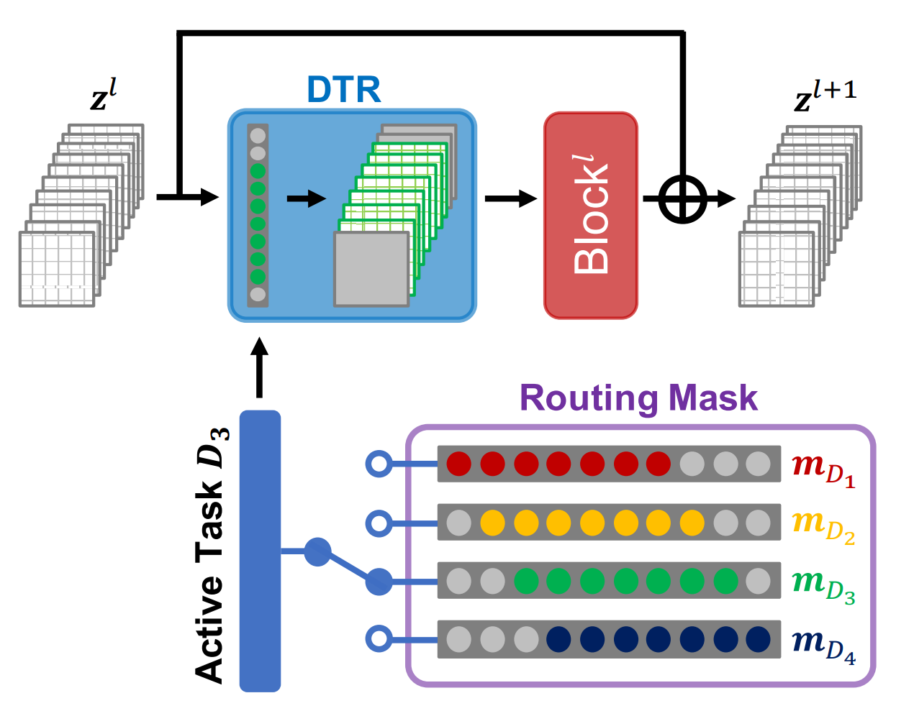
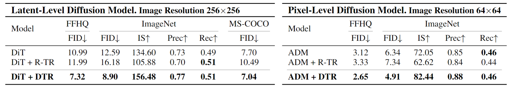
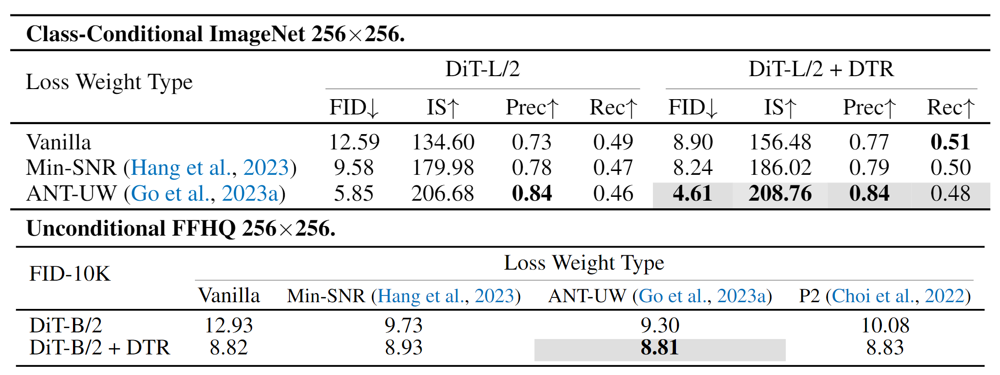
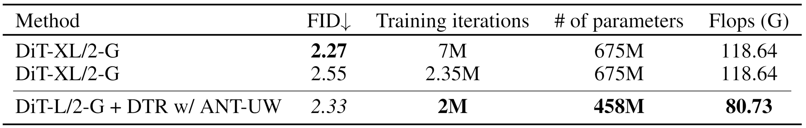

Through rethinking the training of diffusion models as multi-task learning,
we propose a simple add-on strategy, DTR,
that improves diffusion model architectures by explicitly routing denoising tasks in diffusion models.
Summary
Our work is first to explore the architectural improvements for diffusion models through the lens of multi-task learning.
We propose a simple add-on strategy, Denoising Task Routing (DTR), that explicitly routes denoising tasks by establishing distinct information pathways for each denoising task.
We show that incorporating the prior knowledge of the denoising tasks such as task affinity and task wegihts in DTR can dramatically improve performance of diffusion models.
DTR offers notable advantages: (1) Simple Implementation, (2) Improved Performance,
(3) Accelerated Convergence, (4) No extra parameters and significant computational.
Method: DTR
1. Conceptualizing diffusion models as a form of multi-task learning.
Denoising tasks at each timestep \(t\), represented as \(D_t\), are central to diffusion models.
These tasks focus on reducing noise, which is quantified by the loss function
\(L_t = ||\epsilon - \epsilon_\theta(x_t, t)||_2^2\).
In this context, diffusion models are conceptualized as a multi-task learning problem,
where they address a set of denoising tasks \(\{D_t\}_{t=1,...,T}\).
2. Task routing for diffusion models

Figure: Task routing for diffusion models.
Task routing establish task-specific paths for each
denoising task within a single neural network \(\epsilon_\theta\) by
utilizing channel masking. For given \(l\)-th block's input \(z^l\),
our denoising task routing is represented as follows:
\[z^{l+1} = z^l + Block (m_{D_t} \odot z^l ) \]
where \(m_{D_t} \in \{0, 1\}^C \) denotes task-specific channel binary mask for \(D_t \).
3. Mask Creation of Denoising Task Routing (DTR)
A. Design principles
DTR utilizes the specific characteristics of denoising tasks for task routing.
From recent findings, design of masks incorporates (1) Task Affinity and (2) Task Weights.
Task Affinity:
Denoising tasks at adjacent timesteps have a higher task affinity than those distant timesteps.
To incorporate this, DTR enforces denoising tasks at adjacent timesteps to have more shared channels than those distant timesteps.
Task Weight:
Previous loss weighting methods have shown that assinging higher weights to denoising tasks at higher timesteps can improve diffusion models.
DTR incorporates this by assigning more channels to denoising tasks at higher timesteps.
\(C_\beta\): activated number of channels for each task, which is represented as \(\beta \cdot C\). \((0<\beta< 1) \).
Task Affinity: In above equation, activated channels are shifted as sliding window, enforcing denoising tasks at adjacent timesteps to have more shared channels.
Task Weight: By introducing hyperparameter \(\alpha > 1\), shifting of sliding window less occurs for lower timesteps,
allwoing more task-dedicated channels to higher timesteps.
Experimental Results
1. Improved quality of generated images
DTR improves the quality of generated images.

Figure: Strong improvement in image quality in DiT and ADM trained on various tasks. R-TR denotes random routing that utilizes random routing.
2. Orthogonality with loss weighting methods
DTR also shows significant improvement in image quality when combined with loss weighting methods.

Figure: DTR shows significant improvement in image quality when combined with loss weighting methods.
3. Significant effectiveness in longer training
Although DTR based on architecture used smaller parameters, DTR shows a similar performance compared to the larger model trained over longer iterations.

Figure: despite using fewer
parameters, Flops, and training iterations, our DTR with ANT-UW outperforms DiT-XL/2 trained
over 2.35 million iterations. Furthermore, our model performs competitively with DiT-XL, which
was trained on a larger set of 7 million iterations.
BibTeX
@article{park2023denoising,
title={Denoising Task Routing for Diffusion Models},
author={Park, Byeongjun and Woo, Sangmin and Go, Hyojun and Kim, Jin-Young and Kim, Changick},
journal={arXiv preprint arXiv:2310.07138},
year={2023}
}